Bento Blocks is a puzzle game where the player uses knives to cut food coming some time early 2025
This is a mostly complete a development as I can give for Bento Blocks from my perspective.
Development of a prototype started in early july of 2023, initially I was thinking about a game where you cut wood
As the game transitioned into something more abstract,
Looking for a project to work on, I found the prototype from the previous year along with some others.
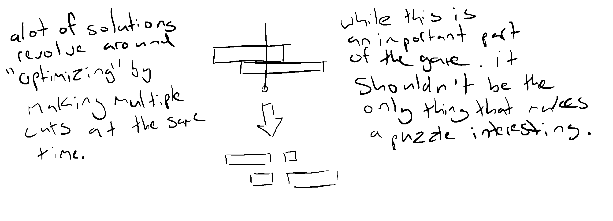 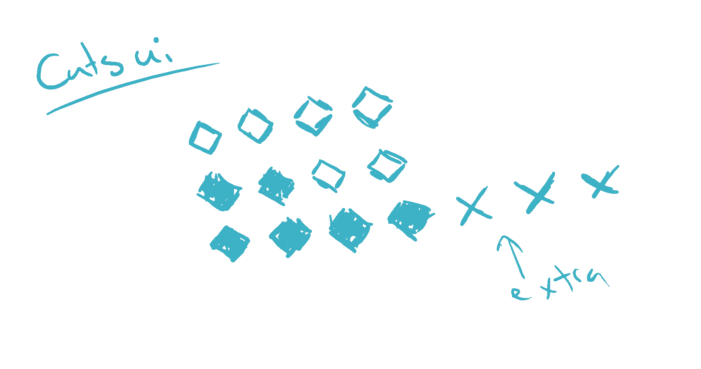 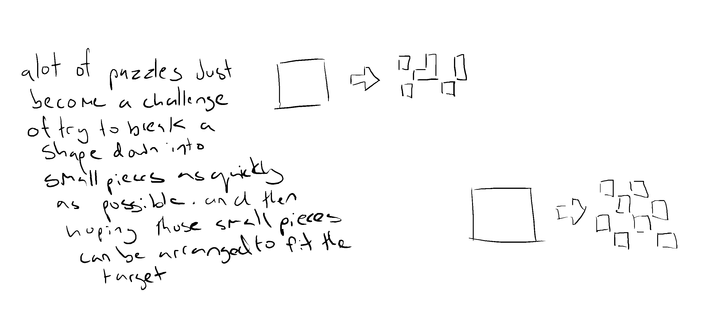 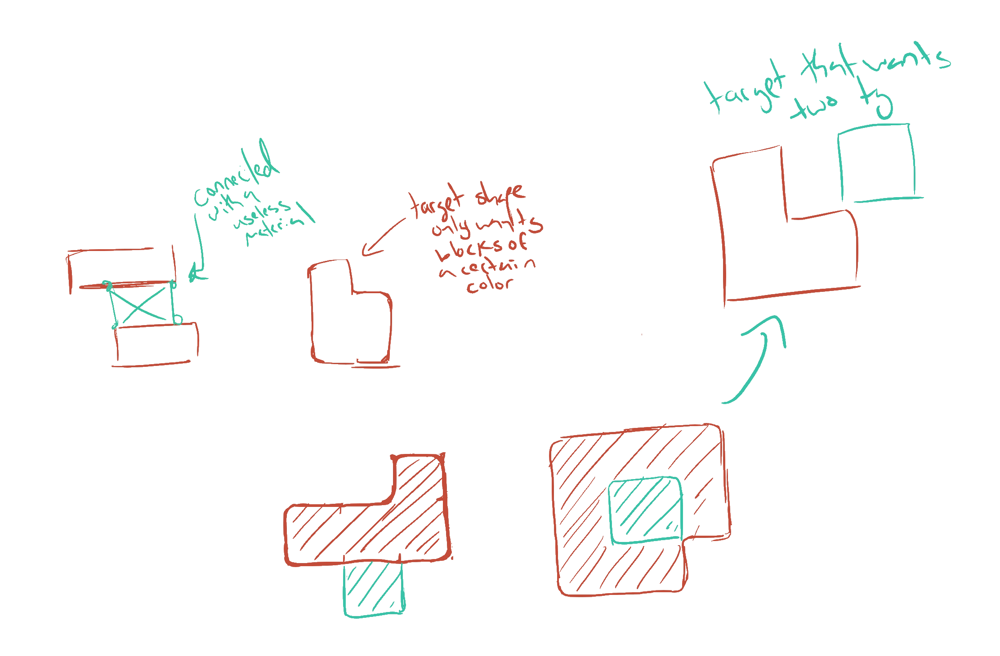 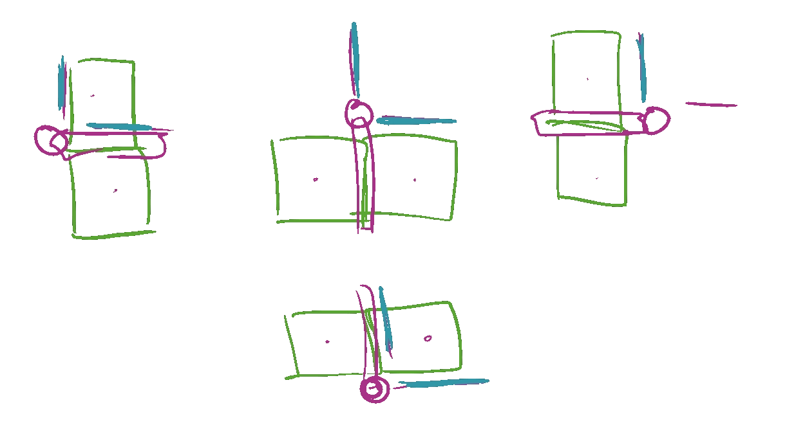 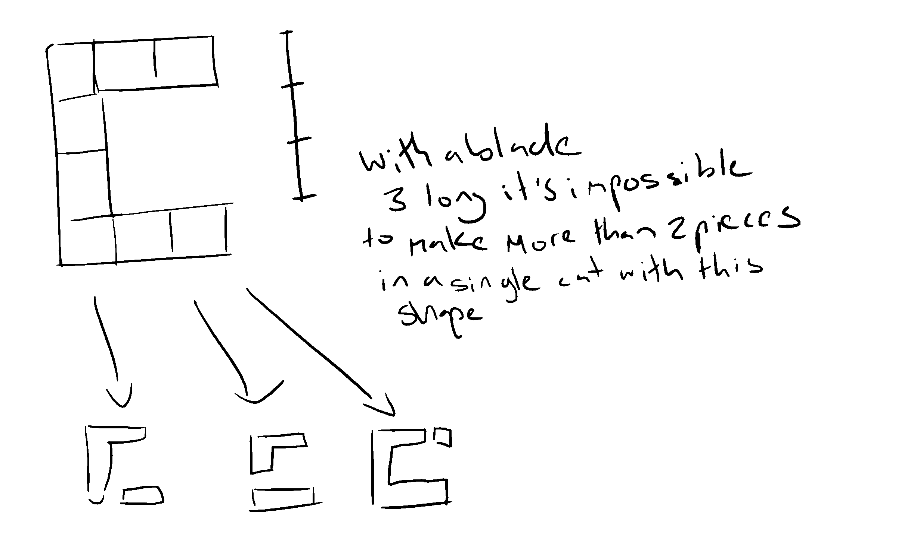 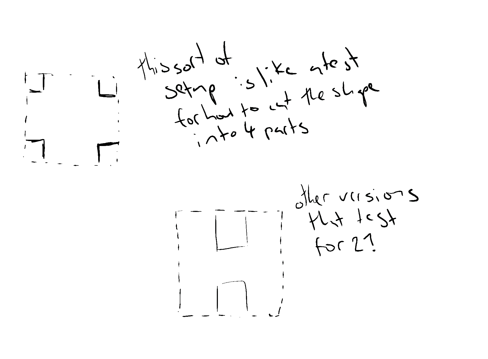 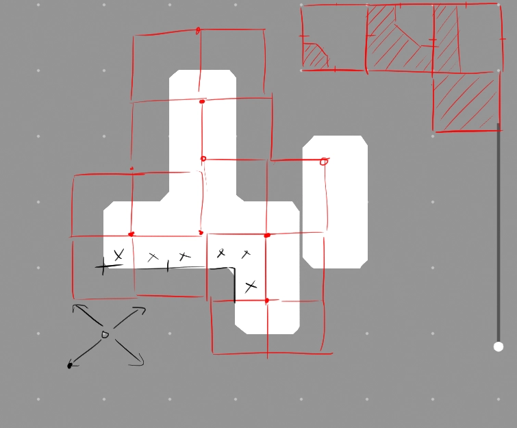 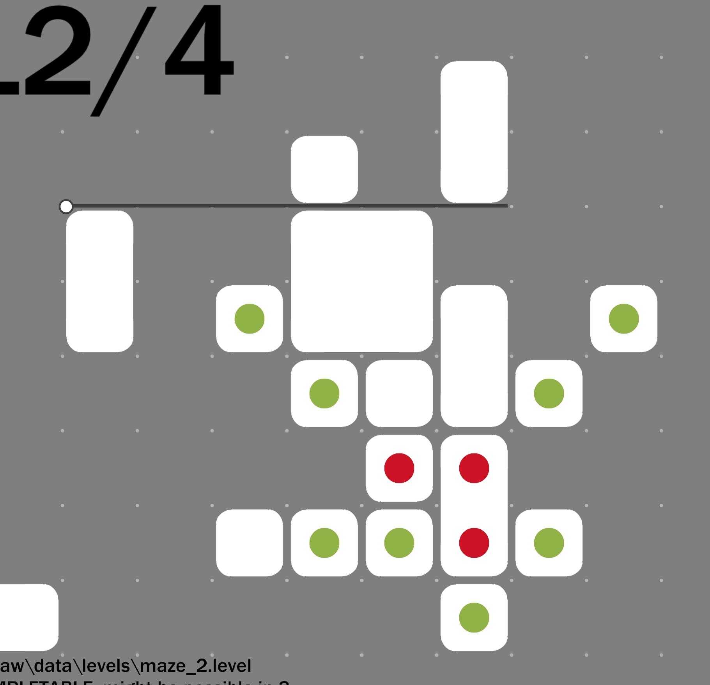 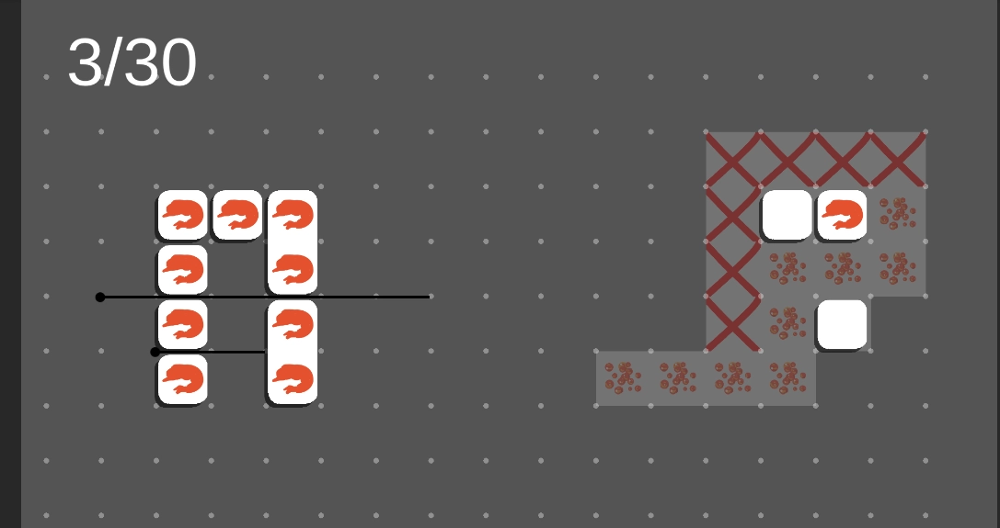 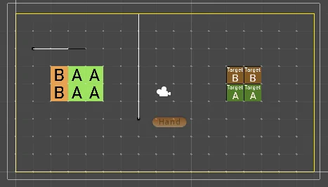The initial version of the game took less than a week to get working, with the experience from the previous prototype and enthusiam to get past the initial ideas into something that was actually finished.